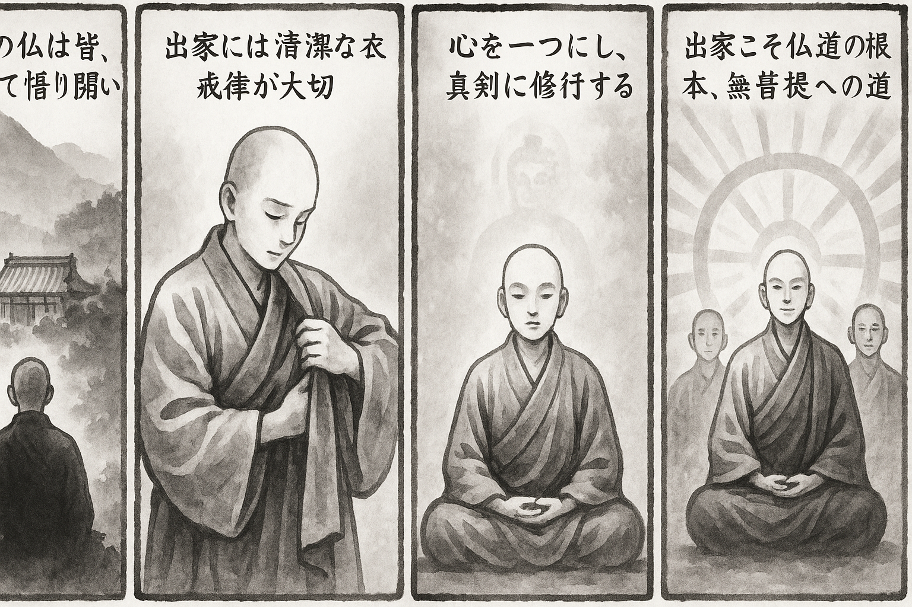

七十五巻 巻一覧
正法眼藏第75 出家
本紹介ページの導入・語彙・深掘り・クイズは tools/regen_volume_intro_from_corpus.py が OpenAI API で生成したものです（入力は当巻の原文からの短い抜粋のみ）。内容はモデル出力のため、重要箇所は必ず原文・教本と照合してください。
出典: https://shomonji.or.jp/zazen/doc/genzou.html
原文・現代語訳の全文は 全文ページを参照してください。
この巻の紹介（導入）
禪苑淸規によれば、三世の諸佛は皆出家して成道したとされ、西天の二十八祖や唐土の六祖もまた佛心印を伝える沙門である。
出家は戒律を先にし、過ちを離れ非を防ぐことが成佛の道であると示されている。
語彙の足場
- 出家：仏教において、俗世を離れ、僧侶としての生活に入ること。出家することで、仏道を歩むことが可能になるとされる。
- 戒律：仏教徒が守るべき規則や教え。出家する際には特に重要視され、戒律を守ることで仏道を進むとされる。
- 沙門：出家した僧侶のこと。仏教においては、修行を通じて悟りを目指す者を指す。
- 成道：仏教において、悟りを開くこと。出家し、戒律を守ることで成道に至るとされる。
原文（要点の抜粋）
当巻の冒頭付近からの短い抜粋です。長い引用は載せていません。 全文は全文ページを参照してください。出典はリポジトリ内 doc/正法眼蔵.txt です。原文の参照元: https://shomonji.or.jp/zazen/doc/genzou.html
禪苑淸規云、三世諸佛、皆曰出家成道。西天二十八祖、唐土六祖、傳佛心印、盡是沙門。蓋以嚴淨毘尼、方能洪範三界。然則、參禪問道、戒律爲先。既非離過防非、何以成佛作祖（禪苑淸規に云く、三世諸佛、皆な出家成道と曰ふ。西天二十八祖、唐土六祖、佛心印を傳ふるは、盡く是れ沙門なり。蓋し毘尼を嚴淨するを以て、方に能く三界に洪範たり。然れば則ち參禪問道は戒律爲先なり。既に過を離れ非を防ぐに非ざれば、何を以てか成佛作祖せん）。
受戒之法、應備三衣鉢具并新淨衣物。如無新衣、浣染令淨、入壇受戒。不得借衣鉢。一心專注、愼勿異緣。像佛形儀、具佛戒律、得佛受用、此非小事、豈可輕心。若借衣鉢、雖登壇受戒、竝不得戒。若不曾受、一生爲無戒之人。濫廁空門、虛受信施。初心入道、法律未諳、師匠不言、陷人於此。今茲苦口、敢望銘心（受戒の法は、應に三衣、鉢具并に新淨の衣物を備ふべし。新衣無きが如きは、浣染して淨からしめて、入壇受戒すべし。衣鉢を借ること得ざれ。一心專注して、愼んで異緣なかるべし。佛の形儀を像り、佛の戒律を具す、佛受用を得。此れは小事に非ず、豈に輕心すべけんや。若し衣鉢を借らば、登壇受戒すと雖も竝びに得戒せず。若し曾受せずは、一生無戒の人爲り。濫りに空門に廁つて、虛しく信施を受けん。初心の入道は、法律未だ諳んぜず、師匠言はずは、人を此に陷さん。今茲に苦口す、敢へて望すらくは心に銘ずべし）。
既受聲聞戒、應受菩薩戒。此入法之漸也（既に聲聞戒を受けては、應に菩薩戒を受くべし。此れ入法の漸なり）。
あきらかにしるべし、諸佛諸祖の成道、ただこれ出家受戒のみなり。諸佛諸祖の命脈、ただこれ出家受戒のみなり。いまだかつて出家せざるものは、ならびに佛祖にあらざるなり。佛をみ、祖をみるとは、出家受戒するなり。
摩訶迦葉、隨順世尊、志求出家、冀度諸有。佛言善來比丘、鬢髪自落、袈裟著體（摩訶迦葉、世尊に隨順して出家を志求す、諸有を度せんことを冀ふ。佛、善來比丘と言へば、鬢髪自落し、袈裟著體す）。
ほとけを學して諸有を解脱するとき、みな出家受戒する勝躅、かくのごとし。
大般若波羅蜜經第三云、
佛世尊言、若菩薩摩訶薩、作是思惟、我於何時、當捨國位、出家之日、卽成無上正等菩提、還於是日、轉妙法輪。卽令無量無數有情、遠塵離垢、生淨法眼、復令無量無數有情、永盡諸漏、心慧解脱、亦令無量無數有情、皆於無上正等菩提、得不退轉。是菩薩摩訶薩、欲成斯事、應學般若波羅蜜（佛世尊言はく、若し菩薩摩訶薩是の思惟を作さん、我れ何れの時に於てか當に國位を捨て、出家せん日、卽ち無上正等菩提を成じ、還た是の日に於て妙法輪を轉ずべき。卽ち無量無數の有情をして遠塵離垢し、淨法眼を生ぜしめ、復た令無量無數の有情をして永く諸漏を盡くし、心慧解脱せしめ、亦た無量無數の有情をして皆な無上正等菩提に於て不退轉を得せしめん。是れ菩薩摩訶薩、斯の事を成ぜんと欲はば、應に般若波羅蜜を學すべし）。
おほよそ無上菩提は、出家受戒のとき滿足するなり。出家の日にあらざれば成滿せず。しかあればすなはち、出家之日を拈來して、成無上菩提の日を現成せり。成無上菩提の日を拈出する、出家の日なり。この出家の翻筋斗する、轉妙法輪なり。この出家、すなはち無數有情をして無上菩提を不退轉ならしむるなり。しるべし、自利利他ここに滿足して、阿耨菩提不退不轉なるは、出家受戒なり。成無上菩提かへりて出家の日を成菩提するなり。まさにしるべし、出家の日は、一異を超越せるなり。出家の日のうちに、三阿僧祇劫を修證するなり。出家之日のうちに、住無邊劫海、轉妙法輪するなり。出家の日は、謂如食頃にあらず、六十小劫にあらず。三際を超越せり、頂𩕳を脱落せり。出家の日は、出家の日を超越せるなり。しかもかくのごとくなりといへども、籮籠打破すれば、出家の日すなはち出家の日なり。成道の日、すなはち成道の日なり。
大論第十三曰、
佛在祇洹、有醉婆羅門、來至佛所、欲作比丘。佛敕諸比丘、與剃頭著袈裟。酒醒驚怪見身、變異忽爲比丘、卽便走去（佛祇洹に在しますに、醉婆羅門有つて佛所に來至し、比丘と作らんことを欲ひき。佛、諸比丘に敕して、剃頭を與へ、袈裟を著せしむ。酒醒めて身を見るに、變異して忽ちに比丘と爲れることを驚怪し、卽便ち走り去りぬ）。
諸比丘問奉佛、何以聽此醉婆羅門、而作比丘、而今歸去（諸比丘佛に問ひ奉らく、何を以てか此の醉婆羅門を聽して比丘と作し、而も今歸去するや）。
図解（4コマ・AI生成）
教義の根拠は原文・出典に従い、漫画は比喩の補助に留めてください。

深掘り（読解の手掛かり）
- 出家は仏教の根本的な実践であり、成道への第一歩とされる。
- 戒律は出家者にとって重要な指針であり、これを守ることで仏道を進むことができる。
- 出家しない者は仏や菩薩にはなれないとされ、出家の重要性が強調されている。
確認（形成評価）
各設問の下の「採点」で正誤を表示します（ブラウザ内のみ。ログは送りません）。